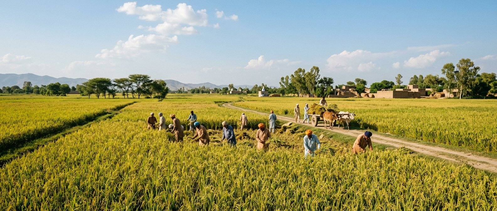
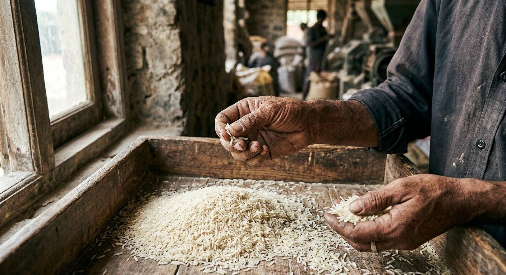
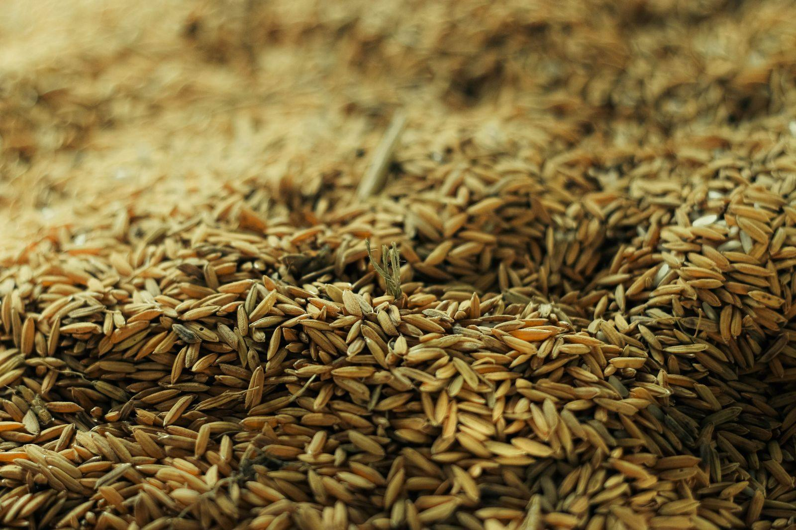
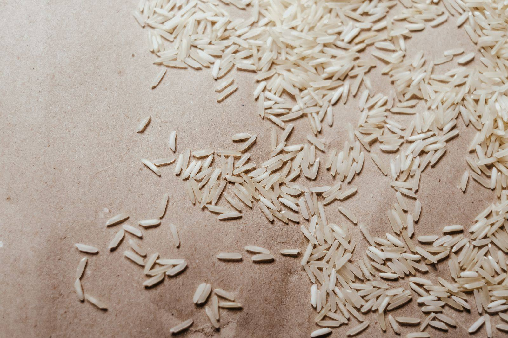
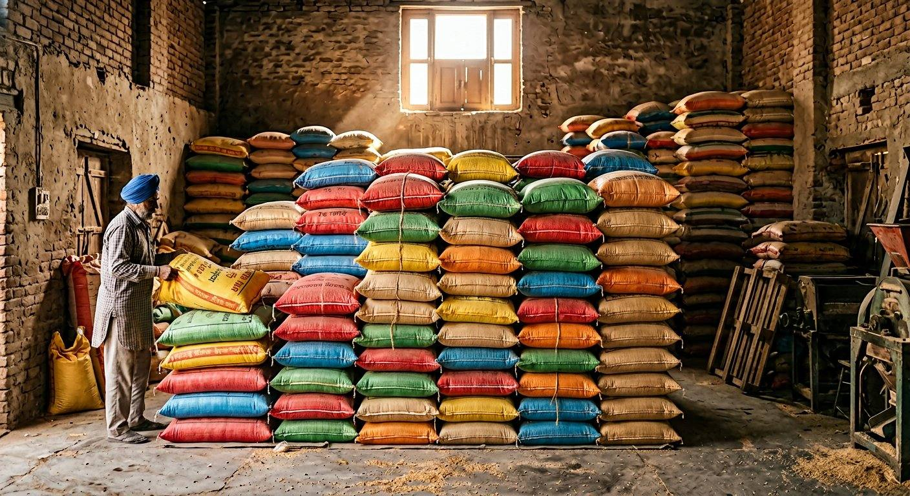
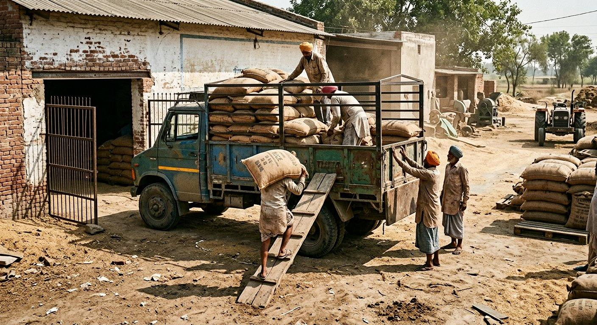
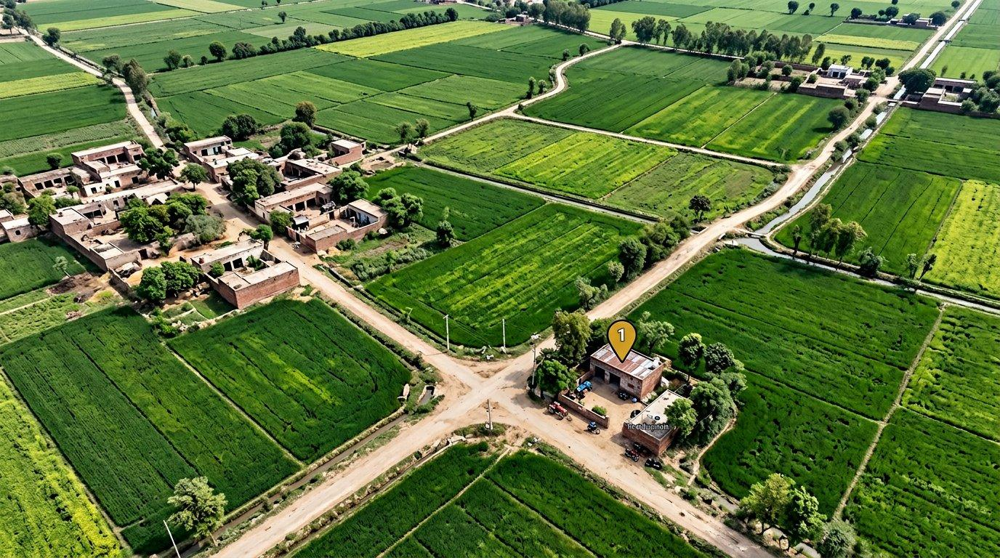

01
Paddy intake
Paddy is received, weighed and recorded. Moisture and lot condition are checked before processing starts.

Our process
Six stages at the mill in Jhabran, Sheikhupura. The sequence follows the product and the requirements agreed for the order — not a claim of capacity or automation.
Six stages
Paddy is received, weighed and recorded. Moisture and lot condition are checked before processing starts.
Processing follows the selected product: steam, or sella (parboiled), as applicable to the order.
Husk and bran are removed to produce milled rice according to the product.
Sorting equipment separates unwanted material and grain that does not meet the process for that lot.
Rice is packed to the agreed brand or private-label specification and bag weight.
Orders are prepared for transport from Jhabran, Pakistan. The destination port is written with the order.
01 — Paddy intake and weighing
Paddy arrives at the mill in Jhabran, Sheikhupura. It is weighed and recorded. Moisture is checked so wet lots are not put straight into store. Weak lots are not packed.

02 — Steam or sella
Steam or sella is applied according to the product required. Sella is parboiled in the paddy; steam is a different process. Fragrance is from the paddy, not added.

03 — Milling
Milling produces the milled rice for the selected product. This page does not claim a throughput figure or a particular machine line.

04 — Sorting
Sorting separates sooty grain, unwanted material and grain that fails the process. What fails the sort does not go in the pack.

05 — Packaging
Rice is packed to the brand or private-label artwork agreed in writing, at the bag weight confirmed for the order. Stored dry.

06 — Dispatch
Orders leave by truck or container from Sheikhupura. Write the discharge port with the product and quantity. Availability and shipment dates are confirmed per order.
Visit
Buyer visits by appointment. Google lists the mill open 24 hours.

Open in Google Maps